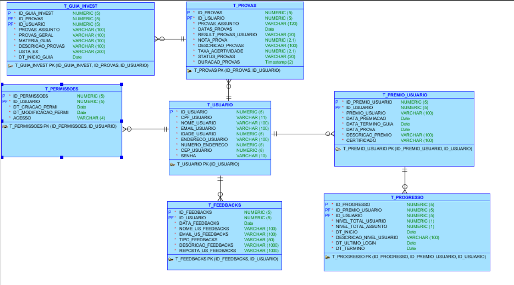
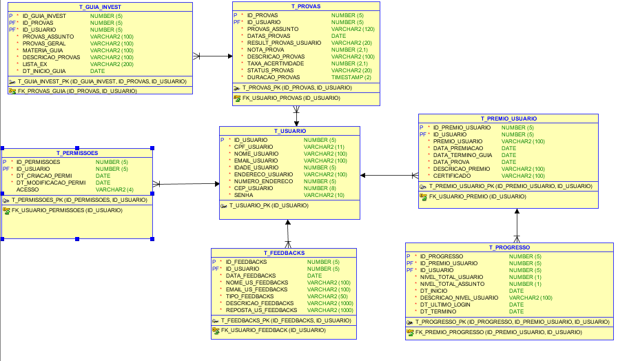
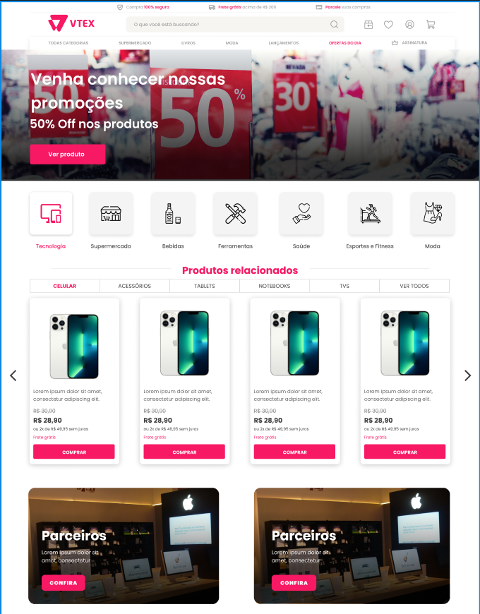
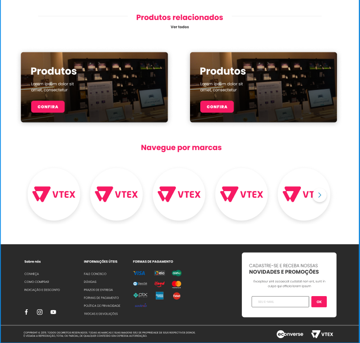
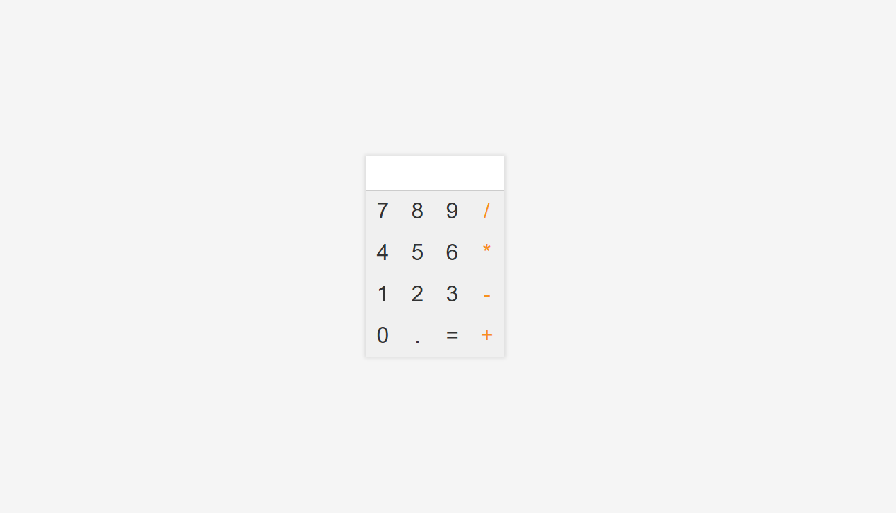
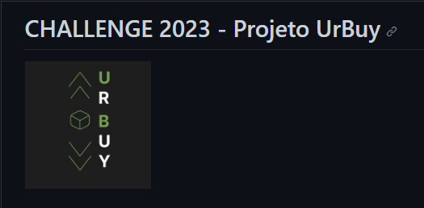
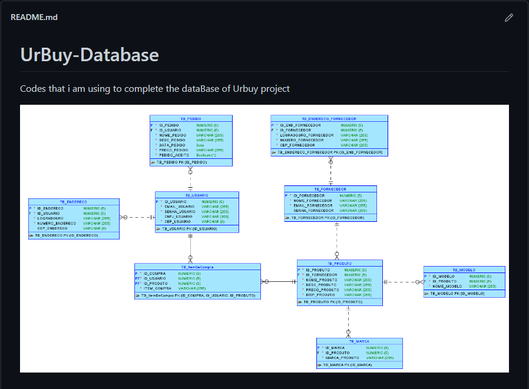

Projetos

- Joguitos
Tecnologias utilizadas:
- HTML | CSS | FLASK | PYTHON
O projeto Joguitos tem como objetivo colocar o nome, categoria e plataforma dos seus jogos favoritos.
- Banco de dados Sprint 4 - Projeto B3
 Tecnologias utilizadas:
- Oracle SQL Developer | Data Modeler
O projeto Banco de dados Sprint 4 tem como intuito mostrar os códigos feitos por mim na última sprint do projeto.
- Gerador de dados automáticos
Tecnologias utilizadas:
- Python
Um código simples utilizado para gerar dados automaticos, com o objetivo de criar diversos INSERTS para o banco de dados
- Layout feito para uma vaga
 Tecnologias utilizadas:
- REACT | CSS/TAILWIND | JS
Uma página de layout feita com o objetivo de reproduzir a página do site real
- API RESTful
Tecnologias utilizadas:
- Node.js | MongoDb
Um código simples utilizado para gerar dados automaticos, com o objetivo de criar diversos INSERTS para o banco de dados
- Calculadora
Tecnologias utilizadas:
- JavaScript
Um código utilizado para fazer uma calculadora em JavaScript com objetivo de aprimorar meus conhecimentos dentro da linguagem
- Projeto challenge JPA
Tecnologias utilizadas:
- JAVA
Código feito para o projeto UrBuy que consiste em uma aplicação java que se comunica com um banco de dados utlizando JPA(Java Persistence API)
- Projeto challenge DataBase
Tecnologias utilizadas:
- DataModeler | Oracle Sql Develope
Código feito para o projeto UrBuy que consiste no Banco de dados do projeto